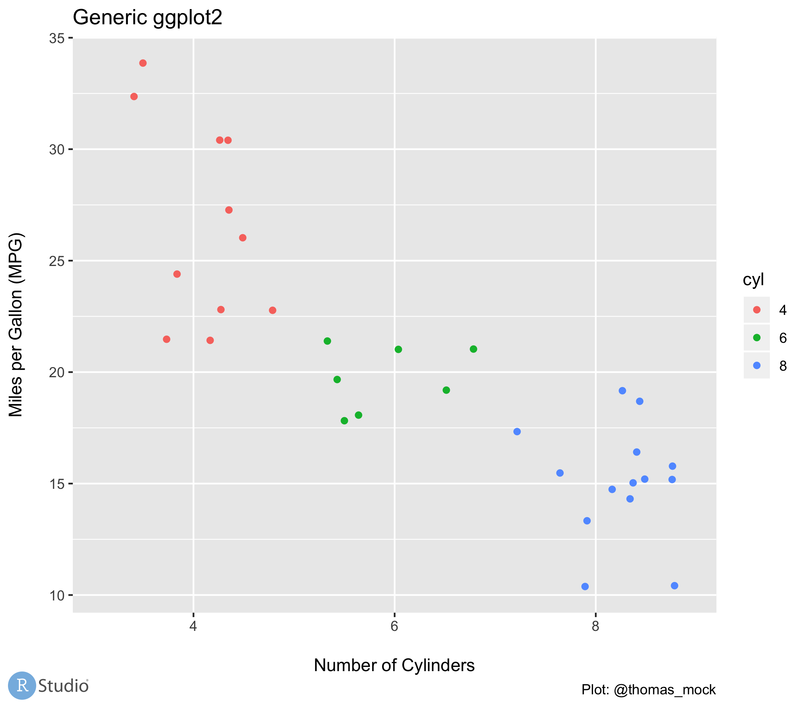

If you missed out on Portlandia, you should take some time to watch this clip of the “Put a bird on it” episode.
Just like Bryce and Lisa - we can put birds on anything with the magick package from ROpenSci!
So let’s get started putting birds on things!
Magic with magick!
The magick package is an R interface to the ImageMagick STL, one of the most comprehensive open source image processing libraries. It gives a lot of power to R users, and we’ll briefly cover the workflow before getting into our real example.
If you want a deeper dive on all the features of magick, check out their awesome vignette!
# "read" in an imagedog<-image_read("https://images.pexels.com/photos/1564506/pexels-photo-1564506.jpeg?auto=compress&cs=tinysrgb&dpr=2&h=650&w=940")image_info(dog)
format width height colorspace matte filesize density
1 JPEG 1880 1208 sRGB FALSE 87884 72x72
We can see a few things about the r_logo object, it is a .png, it’s height and width, filesize, and DPI/density.
Notice that offset reads as x-axis pixels, y-axis pixels, so "+500+1000 indicates from the top left corner place the image 500 pixels to the right and 1000 pixels down.
Now that we’ve been oriented to how the magick package works, and had some fun by putting a bird on our lovely Boston Terrier model, let’s dive into the real purpose of this post - adding a logo to your ggplot!
Building a ggplot with a logo
In the exampe I will show below you will have already saved the plot as an image, so we can skip with the normal ggplot2 code. However, please note that if you do want to build in some extra whitespace to your plot to save “space” for your logo you can do so by changing the margins of your overall plot. You can also add a figure caption with labs(caption = "text to change here"), which inherently adds some whitespace to incorporate the caption.
Margins can take multiple units arguments including: “cm”, “in”, “lines”, “pt”, for more info check out the ggplot2 docs.
Notice: The margins read as t, r, b, l or c(top, right, bottom, left). I typically see logos on the bottom left or top right so you can:
add space at the top for example with: c(2.5, 0.5, 0.5, 0.5)
add space to the bottom with: c(0.5, 0.5, 2.5, 0.5)
Notice the below plot has extra space on the bottom, and I have added a grey background purely to highlight this extra space.
# plot background = lightgrey for highlight, not necessary for sizing
Read in a plot
So let’s read in our publication plot to work with! Please notice that this can be a local file with traditional path structure or a hosted image as a url. I’m using URLs so you can try these out yourself!
# A tibble: 1 × 7
format width height colorspace matte filesize density
<chr> <int> <int> <chr> <lgl> <int> <chr>
1 PNG 300 105 sRGB TRUE 0 57x57
Where to put the logo?
We can then overlay the logo over the plot, let’s try bottom left, and we want ~ 1% padding for aesthetics - so we can use the following code to get dimensions and pixel numbers.
# get dims of the plotplot_height<-magick::image_info(pub_plot)$heightplot_width<-magick::image_info(pub_plot)$width# get dims of the logologo_width<-magick::image_info(logo)$widthlogo_height<-magick::image_info(logo)$height# get number of pixels to be 1% from the bottom of the plot# while accounting for the logo heightplot_height-logo_height-plot_height*0.01
[1] 1826.49
# get number of pixels to be 1% from the left of the plotplot_width*0.01
[1] 22.22
Add the logo
By using offset = "+22+1826" we indicate that we are placing the logo 22 pixels to the right and 1826 pixels down.
Boom! We have our logo overlay on the plot in the right location! But we had to manually figure out and set the logo position, which is less than ideal for programmatic use down the road. I also manually resized the logo to 300 pixels in an earlier step - we should make that automagick as well!
Put it in a function! (Bird not included)
To make the logo add process more reproducible, we can build a function to take the various heights and widths of the logo/plot and automatically resize the logo to match as well as calculating the number of pixels to put it in each respective corner. The logo_scale argument defaults to 10 - so the logo will be 1/10th the width of the plot.
plot_with_logo<-add_logo(
plot_path ="", # url or local file for the plot
logo_path ="", # url or local file for the logo
logo_position =""# choose a corner# 'top left', 'top right', 'bottom left' or 'bottom right'#logo_scale = 10 as default, but can change to manually make logo bigger)# save the image and write to working directorymagick::image_write(plot_with_logo, "plot_with_logo.png")
The function details
This function takes in two images, gets the dimension information, then pastes the logo at 1/10th scale in the specified corner with 1% padding. The function also has a warning if you input a logo_position that is not included.
add_logo<-function(plot_path, logo_path, logo_position, logo_scale=10){# Requires magick R Package https://github.com/ropensci/magick# Useful error message for logo positionif(!logo_position%in%c("top right", "top left", "bottom right", "bottom left")){stop("Error Message: Uh oh! Logo Position not recognized\n Try: logo_positon = 'top left', 'top right', 'bottom left', or 'bottom right'")}# read in raw imagesplot<-magick::image_read(plot_path)logo_raw<-magick::image_read(logo_path)# get dimensions of plot for scalingplot_height<-magick::image_info(plot)$heightplot_width<-magick::image_info(plot)$width# default scale to 1/10th width of plot# Can change with logo_scalelogo<-magick::image_scale(logo_raw, as.character(plot_width/logo_scale))# Get width of logologo_width<-magick::image_info(logo)$widthlogo_height<-magick::image_info(logo)$height# Set position of logo# Position starts at 0,0 at top left# Using 0.01 for 1% - aesthetic paddingif(logo_position=="top right"){x_pos=plot_width-logo_width-0.01*plot_widthy_pos=0.01*plot_height}elseif(logo_position=="top left"){x_pos=0.01*plot_widthy_pos=0.01*plot_height}elseif(logo_position=="bottom right"){x_pos=plot_width-logo_width-0.01*plot_widthy_pos=plot_height-logo_height-0.01*plot_height}elseif(logo_position=="bottom left"){x_pos=0.01*plot_widthy_pos=plot_height-logo_height-0.01*plot_height}# Compose the actual overlaymagick::image_composite(plot, logo, offset =paste0("+", x_pos, "+", y_pos))}

So there you go! Happy logo adding and bird putting!